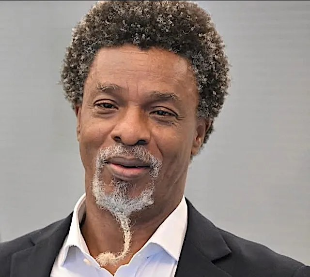

NNPC’s ₦210 trillion question: Not missing is not the same as accounted for, By Posi Olatubosun

### NNPC’s ₦210 trillion balances raise questions over disclosure
Former Nigerian National Petroleum Company (NNPC) chief executive Mele Kyari has rejected claims that ₦210 trillion was lost during his tenure, describing the disputed figures as bookkeeping issues. His former chief financial officer and the former head of NAPIMS have made similar arguments before the Senate Public Accounts Committee. The figures are balance-sheet entries rather than cash reported to have been taken, but the committee is seeking explanations for how they were calculated and supported.
The committee’s review of NNPC audited financial statements from 2017 to 2023 identified about ₦103 trillion in accrued expenses and ₦107 trillion in sundry receivables. Lawmakers said the expenses included retention, legal and audit fees without specific breakdowns. NNPC attributed part of the balances to joint venture cash calls, but the committee questioned that account, noting that the cash call regime ended in January 2017. NNPC said the receivables were owed by defunct banks and other entities, but the debtors and individual amounts were not identified.
The accounting distinction is central to the dispute. Accrued expenses are liabilities for costs incurred but not yet paid; receivables are assets representing money owed to a company. Neither category alone demonstrates that cash has gone missing. However, the commentary argues that balances without identifiable counterparties or supporting evidence raise concerns about the reliability of the accounts. NNPC’s former chief financial officer told the committee that revenue over the seven-year period was about ₦54.5 trillion, a figure he cited to dispute that ₦210 trillion could have been lost. The commentary says that comparison also raises questions about the scale and composition of the reported balances.
The committee has asked NNPC’s auditors to provide a complete schedule of the receivables and payables, giving them one week in July, and rejected confidentiality as a reason to withhold it. The dispute has also included missed summonses and a warrant of arrest issued for Kyari in June after he failed to appear. The committee has raised separate questions about production costs and subsidy deductions. The commentary calls for NNPC to publish an itemised reconciliation, commission an independent forensic audit, and address any balances that cannot be substantiated. It also argues that the Financial Reporting Council should review the audits and that any necessary corrections to past accounts should be disclosed, particularly if NNPC proceeds with plans to list on the stock exchange.
Source: Premium Times